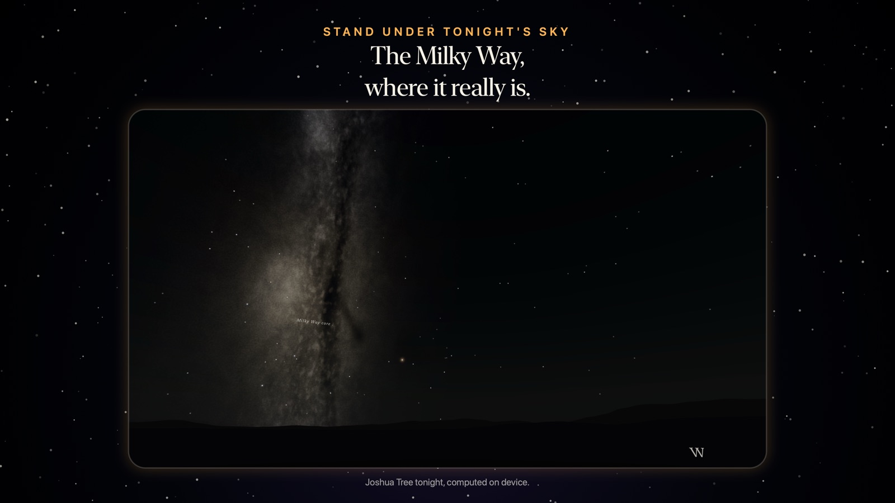
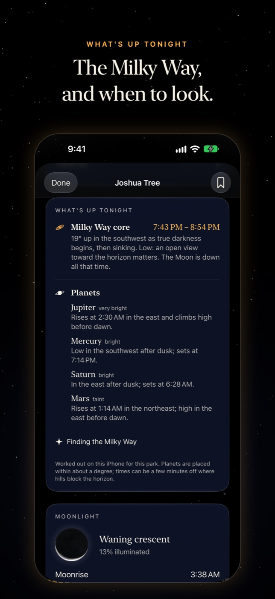

For iPhone, iPad, Apple Watch and Apple Vision Pro
Where, and which night, for the darkest sky.
Nyx compares the 63 US national parks night by night and tells you where and when the sky will be darkest. It turns the Moon, the clouds, the sky glow and the hours of true darkness into one score from 0 to 100, shows its reasons, and says what it cannot know. It is free, works offline, and collects nothing: no account, no ads, no tracking.
Coming to the App Store


Screens from the pre-release build. Every number in them comes from the app's own engine.